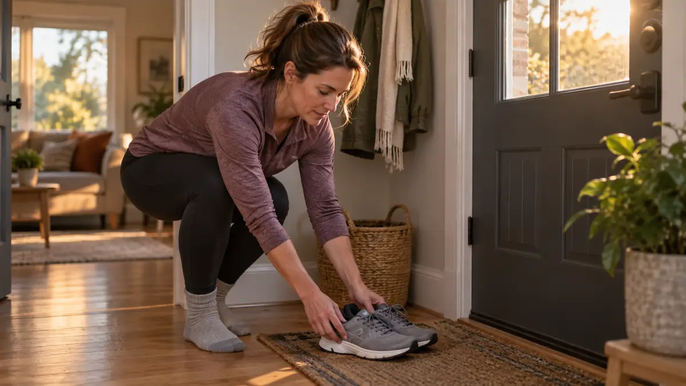

How your body clock affects when you should exercise does not produce one ideal appointment for everyone. Your sleep, responsibilities and appropriate activity options matter together.
A time that looks efficient can still reduce needed sleep or lack safe access. Consider those constraints before moving an activity to an advertised optimal hour.
This guide offers five scheduling checks. It does not diagnose a chronotype, prescribe exercise for a condition or promise that a particular time improves every outcome.
How your body clock affects when you should exercise is one part of a broader schedule question. Check sleep opportunity, access, responsibilities, your observed response and suitable advice rather than choosing a universal best hour.
What is a body-clock consideration?
Circadian rhythms involve roughly daily patterns linked to environmental cues. NHLBI explains their role in sleep and wakefulness; do not infer a personal exercise prescription from that definition.
- Consider sleep and activity together.
- Do not self-diagnose a chronotype.
What are the signs that a time does not fit?
A time needs review if it repeatedly crowds out sleep, conflicts with essential care or lacks appropriate access. Check the actual problem before blaming motivation.
- Notice a repeated conflict.
- Keep essential care visible.
Why does a circadian explanation not identify everyone's best hour?
Sleep-wake patterns differ, and practical activity requirements also differ. A general body-clock explanation cannot alone determine the best time for a particular person and goal.
- An explanation is not a personalised prescription.
- Different goals can require different advice.
How can five checks compare available times?
Choose among feasible, appropriate opportunities. This comparison does not require a fixed start time or a daily streak.
- 1. Sleep. Would this opportunity reduce needed sleep or disrupt a workable sleep arrangement?
- 2. Access. Are the space, equipment or assistance available?
- 3. Responsibilities. Does a duty need agreed coverage?
- 4. Response. What have you actually noticed about comfort or sleep, without assuming a universal effect?
- 5. Advice. Does a health concern require individual guidance before changing activity?
How can you manage an activity schedule daily?

Review the arrangement when sleep, shifts or health needs change. Discuss relevant health concerns with a suitable professional and avoid treating a timetable as treatment for a sleep disorder.
- Revise when circumstances change.
- Keep an appropriate care route available.
Activity-time comparison: Available time ____. Sleep conflict ____. Access requirement ____. Essential duty ____. Relevant observation or advice ____.
For a related next step, consider reviewing sleep arrangements, considering appropriate activity and care, discussing responsibility conflicts.
An Illustrative Scenario
Fictional example: A person considers an early class but finds it would shorten an already limited sleep opportunity. They compare another feasible time instead of assuming early exercise is always superior. Start with the actual constraint.
A different class may also be inaccessible. This example does not establish a best circadian phase or improved fitness. Seek suitable alternatives or advice rather than forcing the advertised schedule.
Frequently Asked Questions
Choose One Small Next Step
A useful schedule fits real needs, not just an ideal hour.
Changing an arrangement can be a reasonable decision.
Compare one available opportunity with your sleep and access needs today.
Sources and Scope
NHLBI explains sleep-wake rhythms. The scheduling checks are editorial and do not establish an optimal exercise time or treatment for a circadian disorder.
Written by the NicheHubPro Editorial Team. Read our editorial policy.
This article is for informational purposes only and does not replace professional medical advice.